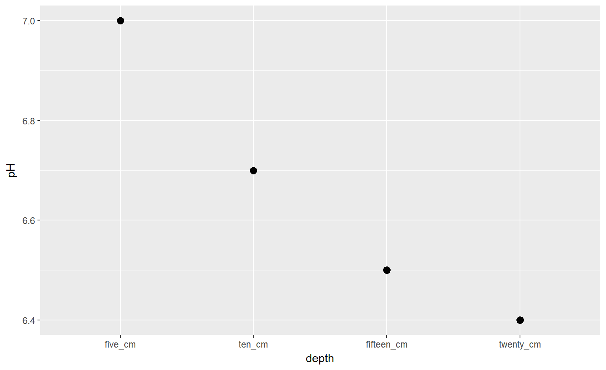

Best way to learn the tidyverse

Ranae Dietzel
Goals The tidyverse is a place where people and their mental well-being are valued. The tidyverse is welcoming to non-programmers. The tidyverse seeks to be a utopia of data science. One of many R universes. My favorite.
Pit of success
Collection of R packages designed to work around a common philosophy.
Model with arrows
*Tidy data
*Piping

## # A tibble: 5 × 5
## property five_cm ten_cm fifteen_cm twenty_cm
## <chr> <dbl> <dbl> <dbl> <dbl>
## 1 pH 7 6.7 6.5 6.4
## 2 NO3 35 22.0 20.0 18.0
## 3 clay 20 20.0 20.0 20.0
## 4 silt 20 20.0 20.0 20.0
## 5 sand 60 60.0 60.0 60.0Plot the change in pH across depth?
gatherWhen column names are values instead of variables, we need to gather
## # A tibble: 5 × 5
## property five_cm ten_cm fifteen_cm twenty_cm
## <chr> <dbl> <dbl> <dbl> <dbl>
## 1 pH 7 6.7 6.5 6.4
## 2 NO3 35 22.0 20.0 18.0
## 3 clay 20 20.0 20.0 20.0
## 4 silt 20 20.0 20.0 20.0
## 5 sand 60 60.0 60.0 60.0depth. This is the key.gather## # A tibble: 5 × 5
## property five_cm ten_cm fifteen_cm twenty_cm
## <chr> <dbl> <dbl> <dbl> <dbl>
## 1 pH 7 6.7 6.5 6.4
## 2 NO3 35 22.0 20.0 18.0
## 3 clay 20 20.0 20.0 20.0
## 4 silt 20 20.0 20.0 20.0
## 5 sand 60 60.0 60.0 60.0value. If you know what it is, name it (NO3ppm). If you have many mixed units, you can use value = value or value = measured etc.gathertidy_soil<-gather(soil, five_cm, ten_cm, fifteen_cm, twenty_cm,
key=depth, value=value)
tidy_soil## # A tibble: 20 × 3
## property depth value
## <chr> <chr> <dbl>
## 1 pH five_cm 7.0
## 2 NO3 five_cm 35.0
## 3 clay five_cm 20.0
## 4 silt five_cm 20.0
## 5 sand five_cm 60.0
## 6 pH ten_cm 6.7
## 7 NO3 ten_cm 22.0
## 8 clay ten_cm 20.0
## 9 silt ten_cm 20.0
## 10 sand ten_cm 60.0
## 11 pH fifteen_cm 6.5
## 12 NO3 fifteen_cm 20.0
## 13 clay fifteen_cm 20.0
## 14 silt fifteen_cm 20.0
## 15 sand fifteen_cm 60.0
## 16 pH twenty_cm 6.4
## 17 NO3 twenty_cm 18.0
## 18 clay twenty_cm 20.0
## 19 silt twenty_cm 20.0
## 20 sand twenty_cm 60.0filter(tidy_soil, property == "pH")%>%
ggplot(aes(x=depth, y=value))+
geom_point(size=3) Almost!
spreadUse this if one of your columns is full of what could be headers
## # A tibble: 6 × 4
## Year Commodity `Data Item` Value
## <int> <chr> <chr> <dbl>
## 1 2015 OATS OATS - ACRES HARVESTED 57000
## 2 2015 OATS OATS - ACRES PLANTED 125000
## 3 2015 OATS OATS - PRODUCTION, MEASURED IN $ 11027000
## 4 2015 OATS OATS - PRODUCTION, MEASURED IN BU 4161000
## 5 2015 OATS OATS - YIELD, MEASURED IN BU / ACRE 73
## 6 2014 OATS OATS - ACRES HARVESTED 55000key, here it is Data Item.value column, here they already have it as Values## # A tibble: 4 × 7
## trt block part may june july august
## <chr> <chr> <chr> <dbl> <dbl> <dbl> <dbl>
## 1 0 A leaf 5.5 7.5 12.5 12.5
## 2 100 A stem 5.7 6.7 7.7 7.7
## 3 130 A fruit 0.0 2.0 8.2 8.8
## 4 150 A root 12.0 14.0 22.5 22.0Which columns need to be incorporated?
What is the key?
What is the value?
gather(biomass, may, june, july, august, key = month, value = g_m2)## # A tibble: 16 × 5
## trt block part month g_m2
## <chr> <chr> <chr> <chr> <dbl>
## 1 0 A leaf may 5.5
## 2 100 A stem may 5.7
## 3 130 A fruit may 0.0
## 4 150 A root may 12.0
## 5 0 A leaf june 7.5
## 6 100 A stem june 6.7
## 7 130 A fruit june 2.0
## 8 150 A root june 14.0
## 9 0 A leaf july 12.5
## 10 100 A stem july 7.7
## 11 130 A fruit july 8.2
## 12 150 A root july 22.5
## 13 0 A leaf august 12.5
## 14 100 A stem august 7.7
## 15 130 A fruit august 8.8
## 16 150 A root august 22.0%>% moves or “pipes” the result forward into the next functionf(x) is the same as x %>% f()
*assumes the first input/argument the function wants is the data set
ggplot(df, aes(x = this, y = values))
vs
df %>% ggplot(aes(x = this, y = values))
Regular code chunks work from inside out
finally_last_step(
and_then_third(
then_second(
do_first(data)
)
)
)Piping uses intuitive ordering
data%>%
do_first()%>%
then_second()%>%
and_then_third()%>%
finally_last_step()